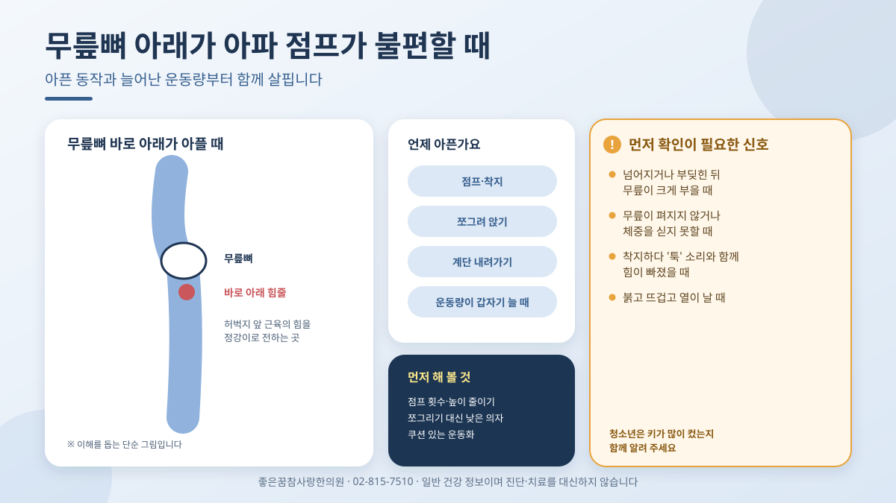

이종호 한의사 감수좋은꿈참사랑한의원 대표원장 (한의사 면허번호 19769)발행 2026-11-23 · 수정 2026-11-25
이 글의 차례
무릎뼈 바로 아래가 아파 점프나 쪼그려 앉기가 불편하다면, 먼저 정확한 통증 위치와 최근 운동량 변화를 살피고 필요하면 초음파로 힘줄 부위를 확인합니다. 농구나 배구, 줄넘기를 즐기거나 쪼그려 앉는 일이 많은 분들이 '무릎 아래가 찌릿하다'고 자주 말씀하십니다. 무릎 통증은 위치에 따라 살피는 방향이 달라 첫 진찰이 중요합니다.
같은 무릎 앞쪽 통증이라도 무릎뼈 둘레가 넓게 뻐근한 경우, 무릎뼈 바로 아래 한 점이 콕 아픈 경우, 그보다 조금 더 아래 뼈가 튀어나온 자리가 아픈 경우는 살피는 방향이 다릅니다. 특히 키가 자라고 있는 청소년은 그 자리가 뼈가 자라는 부위일 수 있어 어른과 같은 방식으로 보지 않습니다.
왜 이런 불편이 생길 수 있나요
- 무릎뼈 아래에는 허벅지 앞 근육의 힘을 정강이로 전달하는 힘줄이 있는데, 점프와 착지, 쪼그려 앉기처럼 무릎을 굽힌 채 힘을 쓰는 동작이 반복되면 이 부위에 부담이 쌓일 수 있습니다.
- 운동량을 갑자기 늘리거나 딱딱한 바닥에서 점프를 많이 하면 힘줄이 적응할 시간이 부족할 수 있습니다.
- 착지할 때 무릎이 안쪽으로 모이거나 뒤꿈치로 쿵 떨어지는 습관이 있으면 무릎 앞쪽에 부담이 더 실릴 수 있습니다.
- 허벅지 앞쪽과 엉덩이 근육이 뻣뻣하면 무릎 아래로 부담이 더 몰리기도 합니다.
- 성장기 청소년은 무릎 아래 뼈가 자라는 부위가 예민해지는 경우도 있어 따로 살핍니다.
먼저 이렇게 여쭙니다
- 무릎뼈 바로 아래를 누르면 아픈가요?
- 점프, 계단 내려가기, 쪼그려 앉기 중 언제 아픈가요?
- 최근 운동량이 갑자기 늘었나요?
- 무릎이 붓거나 '덜컥' 걸리는 느낌이 있나요?
- 운동을 시작할 때 아프다가 몸이 풀리면 덜해지나요?
- 시합이나 시험처럼 앞두고 있는 일정이 있나요?
스스로 점검해 보세요
- 무릎뼈 바로 아래 한 점을 손가락으로 짚을 수 있다
- 점프 착지나 계단을 내려갈 때 그 자리가 찌릿하다
- 운동을 시작할 때 아프다가 몸이 풀리면 덜해진다
- 운동한 다음 날 아침 무릎 앞이 뻣뻣하다
- 오래 앉아 있다 일어날 때 무릎 아래가 시큰하다
- 최근 몇 주 사이 운동량이나 점프 횟수가 늘었다
- 청소년이고 최근 키가 많이 컸다
여러 개가 해당한다면 무릎 아래 힘줄 쪽 부담을 먼저 살피고, 마지막 항목이 해당하면 뼈가 자라는 자리인지 함께 확인합니다.
일상에서 먼저 해 볼 수 있는 것
- 통증이 있는 동안 점프 운동의 횟수와 높이를 줄이기
- 운동 전후로 허벅지 앞쪽과 엉덩이를 가볍게 풀기
- 쪼그려 앉는 대신 낮은 의자 쓰기
- 쿠션이 있는 운동화 신기
- 운동한 날과 아픈 정도를 함께 적어 두기
운동을 모두 멈추기보다 아픈 동작만 줄이고 할 수 있는 운동은 이어 가는 방향을 먼저 생각합니다. 예를 들어 점프와 깊은 쪼그려 앉기는 잠시 줄이고, 평지 걷기나 상체 운동처럼 무릎 아래가 아프지 않은 범위의 활동은 이어 갈 수 있습니다.
운동 다음 날 아침에 무릎 앞이 더 뻣뻣했다면 전날 양이 많았다는 신호일 수 있어, 그날의 운동량을 함께 적어 두시면 다음 진찰에서 기준을 정하기 쉽습니다.
예를 들면 이런 경우입니다
- 예를 들어 주말마다 동호회에서 농구나 배구를 하는 직장인이라면, 평일에는 거의 움직이지 않다가 주말에 몰아서 뛰는 흐름이 무릎에 부담이 될 수 있어 일주일 운동 일정을 함께 보고 시합 전후의 양을 조절하는 방법부터 이야기합니다.
- 예를 들어 체력시험을 앞두고 줄넘기와 달리기를 갑자기 늘린 수험생이라면, 시험 날짜와 남은 기간을 먼저 여쭙고 준비를 이어 가면서 무릎 아래 부담을 줄일 수 있는 순서를 함께 정합니다.
- 예를 들어 줄넘기 수행평가나 운동부 활동으로 무릎 아래가 아픈 중학생이라면, 보호자와 함께 아프기 시작한 때와 키 변화를 여쭙고 뼈가 자라는 자리인지 살핀 뒤 필요하면 영상 검사가 가능한 의료기관을 먼저 안내합니다.
얼마나 지켜보고, 언제 상담할까요
- 운동을 시작할 때만 잠깐 아프고 몸이 풀리면 덜해지는 정도라면, 며칠에서 1~2주 동안 점프와 쪼그려 앉기를 줄이며 변화를 지켜볼 수 있습니다.
- 2~3주가 지나도 같은 동작에서 계속 아프거나, 운동 중에도 통증이 이어지거나, 계단 같은 일상 동작에서도 아프다면 진찰을 받아 보시길 권합니다.
- 시합이나 시험이 가까워 운동을 줄이기 어렵다면 기간과 관계없이 일정에 맞춰 미리 상담해 보세요.
- 이럴 땐 바로 확인하세요. 착지하다 '툭' 하는 느낌과 함께 힘이 빠졌거나, 무릎이 크게 붓고 펴지지 않거나, 체중을 싣지 못한다면 기다리지 말고 영상 검사가 가능한 의료기관이나 응급실을 먼저 찾으세요.
한의원에서 함께 살필 수 있는 경우
- 무릎뼈 아래 통증이 이어지는 경우 아픈 지점과 동작을 함께 살핍니다.
- 필요하다고 판단되면 초음파로 힘줄 부위를 확인하고 체외충격파를 검토합니다.
- 허벅지와 엉덩이 근육의 긴장이 함께 있는 경우 침과 추나를 이어서 살핍니다.
좋은꿈참사랑한의원에서는 먼저 어떤 운동을 얼마나 하는지, 어느 동작에서 아픈지를 충분히 듣고 쪼그려 앉기나 한 발 서기 같은 동작으로 함께 확인합니다. 필요하다고 판단될 때 초음파로 무릎 아래 힘줄을 살피고, 상태에 따라 체외충격파, 침, 약침, 추나를 정합니다. 귀가 전에는 운동을 어느 정도로 이어 갈지와 다음에 확인할 동작을 함께 정해 드립니다.
처음 오시면 문진으로 하는 운동과 일주일 일정, 통증이 시작된 때를 듣고 맥부터 짚어 본 뒤, 무릎뼈 아래와 그 주변을 나누어 눌러 보고 쪼그려 앉기, 한 발 서기, 계단 내려가기 같은 동작을 함께 확인합니다.
체외충격파가 맞아 보이면 원내 장비(제우스·한일티엠) 가운데 어떤 것을 쓸지, 어느 자리에 어느 세기로 시작해 몇 번, 어떤 간격으로 이어 갈지는 진찰 뒤 함께 정하고, 운동을 얼마나 줄였다가 언제 되돌릴지도 같이 이야기합니다. 비용이나 보험 적용은 방문 전 전화로 확인해 주세요.
이렇게 기록해 오시면 상담이 쉬워집니다
- 하는 운동 종류, 일주일 횟수, 최근 늘어난 양
- 통증이 시작된 시점과 아픈 동작
- 운동 시작할 때, 운동 중, 다음 날 중 언제 아픈지
- 신는 운동화와 주로 뛰는 바닥(실내 코트, 운동장, 아스팔트 등)
- 청소년이라면 최근 키가 많이 컸는지
이런 증상은 먼저 확인이 필요합니다
- 넘어지거나 부딪힌 뒤 무릎이 크게 붓는 경우
- 무릎이 펴지지 않거나 체중을 싣지 못하는 경우
- 무릎이 붉고 뜨거우며 열이 나는 경우
- 착지하다 '툭' 하는 느낌과 함께 갑자기 힘이 빠진 경우
체외충격파는 진찰 후 필요하다고 판단될 때만 하며, 대상과 횟수, 비용은 진찰 후 안내해 드립니다. 복용 중인 약은 처방한 의사와 상의 없이 줄이거나 끊지 않습니다.
함께 읽으면 좋은 글
- 무릎이 아프면 운동을 완전히 쉬어야 할까요?
- 체력시험 준비로 갑자기 운동량을 늘린 뒤 무릎과 종아리가 아플 때는?
- 아이나 청소년이 초음파 검사를 받을 때 보호자는 무엇을 알아 두면 좋을까요?

여쭙는 것
- 무릎뼈 바로 아래를 누르면 아픈가요?
- 점프, 계단 내려가기, 쪼그려 앉기 중 언제 아픈가요?
- 최근 운동량이 갑자기 늘었나요?
생활에서 해 볼 것
- 통증이 있는 동안 점프 운동의 횟수와 높이를 줄이기
- 운동 전후로 허벅지 앞쪽과 엉덩이를 가볍게 풀기
- 쪼그려 앉는 대신 낮은 의자 쓰기
한의원에서 함께 살필 것
- 무릎뼈 아래 통증이 이어지는 경우 아픈 지점과 동작을 함께 살핍니다.
- 필요하다고 판단되면 초음파로 힘줄 부위를 확인하고 체외충격파를 검토합니다.
- 허벅지와 엉덩이 근육의 긴장이 함께 있는 경우 침과 추나를 이어서 살핍니다.
먼저 확인이 필요한 신호
- 넘어지거나 부딪힌 뒤 무릎이 크게 붓는 경우
- 무릎이 펴지지 않거나 체중을 싣지 못하는 경우
- 무릎이 붉고 뜨거우며 열이 나는 경우
한눈에 보는 표
| 구분 | 핵심 |
|---|---|
| 여쭙는 것 | 무릎뼈 바로 아래를 누르면 아픈가요? 점프, 계단 내려가기, 쪼그려 앉기 중 언제 아픈가요? |
| 생활에서 해 볼 것 | 통증이 있는 동안 점프 운동의 횟수와 높이를 줄이기 운동 전후로 허벅지 앞쪽과 엉덩이를 가볍게 풀기 |
| 한의원에서 함께 살필 것 | 무릎뼈 아래 통증이 이어지는 경우 아픈 지점과 동작을 함께 살핍니다. 필요하다고 판단되면 초음파로 힘줄 부위를 확인하고 체외충격파를 검토합니다. |
| 먼저 확인이 필요한 신호 | 넘어지거나 부딪힌 뒤 무릎이 크게 붓는 경우 무릎이 펴지지 않거나 체중을 싣지 못하는 경우 |
자주 묻는 질문
운동을 완전히 쉬어야 하나요?
아픈 동작을 줄이고 할 수 있는 운동을 찾는 방향으로 함께 이야기합니다.
청소년도 체외충격파를 받나요?
성장기에는 뼈가 자라는 부위를 더 신중하게 살핍니다. 보호자와 함께 오셔서 상담하시길 권합니다.
무릎 보호대를 하고 운동해도 되나요?
잠시 도움이 될 수 있지만 보호대만 믿고 운동량을 늘리지 않는 것이 좋습니다. 무릎 상태를 본 뒤 함께 이야기합니다.
초음파로는 무엇을 보나요?
무릎뼈 아래 힘줄의 두께와 주변 상태를 반대쪽과 비교해 살필 수 있습니다. 뼈 안쪽처럼 초음파로 보기 어려운 부분은 영상 검사가 가능한 의료기관을 안내합니다.
진료 시간은 어떻게 되나요?
좋은꿈참사랑한의원은 평일 09:30~20:00(점심 13:00~14:00), 토·일·공휴일 09:30~15:00에 진료합니다.
좋은꿈참사랑한의원은 재진 때 지난번 이야기부터 이어서 여쭙니다. 진료시간과 예약은 오시는 길에서 확인하세요.
어디서 상담받을 수 있나요?
좋은꿈참사랑한의원은 서울 동작구 만양로2길 2 신성빌딩 3층·5층(서울 동작구 상도동, 7호선 상도역 3번 출구 근처)에 있습니다. 한의사 3명(이종호 대표원장, 조영기 수석진료원장, 정원영 진료원장)이 진료합니다. 진료시간은 평일 09:30~20:00(점심 13:00~14:00), 토·일·공휴일 09:30~15:00이며, 방문 전 전화로 확인을 권합니다. 예약은 네이버 예약, 카카오톡 상담, 전화 02-815-7510로 받습니다.
이 글은 일반적인 건강 정보이며 개인의 진단이나 치료를 대신하지 않습니다. 증상이 있거나 복용 중인 약이 있다면 진료를 통해 확인하세요. 치료 효과는 개인마다 다를 수 있습니다.
작성 기준: 일반적으로 알려져 있는 건강 정보를 참고해 정리했습니다(대표원장 감수). 증상 기록은 1~2주 동안 하루 1회, 비슷한 시간에 적어 오시면 지난 상태와 비교하기 쉽습니다.